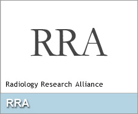
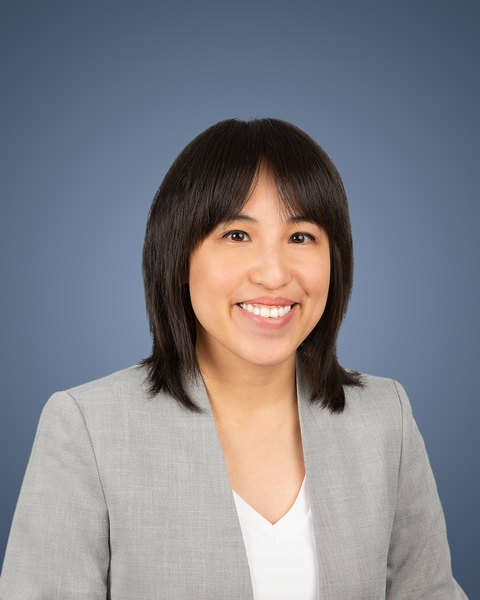

Co-Lead, AI2Practice
Shinjer Li
Eastern Virginia Medical School at Old Dominion University
Medical Student Lead*AI2Practice is a free, open course that connects the foundations of artificial intelligence with clinical evaluation, implementation, research and teaching in radiology.

AI2Practice is co-led by Shinjer Li and Florence Doo, with contributors from radiology, imaging informatics, AI, education and clinical practice.
Shinjer Li
Eastern Virginia Medical School at Old Dominion University
Medical Student Lead*
Florence Doo, MD, MA, CIIP
University of Maryland Institute for Health Computing
Committee Chair*
Raisa Amiruddin, MBBS
MetroWest Medical Center, Massachusetts

Peter Chang, MD
University of California, Irvine

Michail Klontzas, MD, PhD
University of Crete School of Medicine

Lars Grimm, MD, MHS
Duke University

Marta Heilbrun, MD
Intermountain Health

Elizabeth Krupinski, PhD
Emory University

Katherine Andriole, PhD
UCLA David Geffen School of Medicine

Nadja Kadom, MD
Emory University / Children's Healthcare of Atlanta
*Role on the AAR / RRA Committee on Data Science & AI.